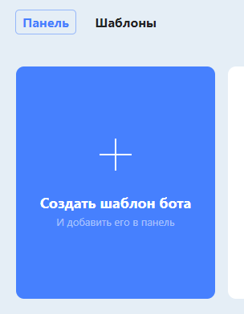
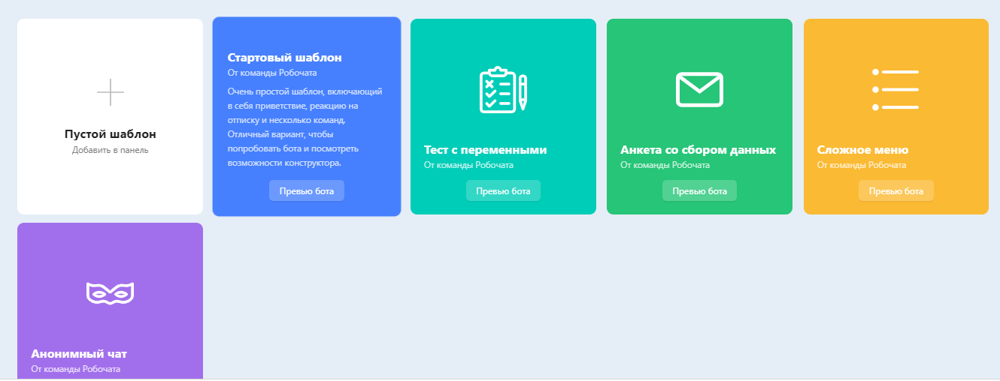
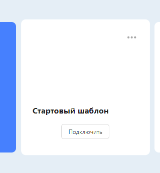
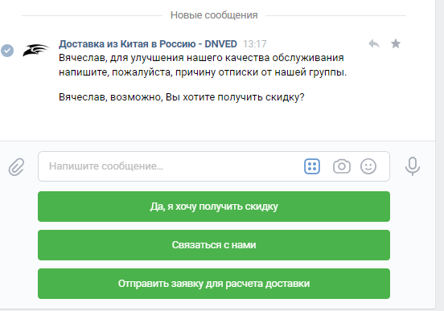

- Регистрация
- 18 Июл 2018
- Сообщения
- 50
Создаем Чат-бот для ВК на этом проверенном и замечательном сервисе: https://robochat.io
- регистрируемся через свой профиль ВК где администратор группы для чат-бота.
- Создаем шаблон Чат-бот для ВК:
- Выбираете шаблон группу ВК:
- Прикрепляете к шаблону требуемую группу ВК:
- Создаете своего чат-бота ВК.
- Для наглядности возможностей работы чат-бота ВК, рекомендую протестировать моего бота в группе по доставке грузов из Китая: https://vk.com/dnved, и вместо благодарностей подпишитесь на мою группу.
- Заходите на страницу группы, сперва пишите любое сообщение, бот отвечает, следуйте инструкции, попробуйте отправить какой-нибудь файл или фото.
- Потом отписываетесь от группы и тестируйте цепочку событий при отписки от группы.
- Не забудь за нового подписаться. =)
- Выделите часа 3-4 для того, чтобы создать бота своей для группы.
- Для удобства подключите к сайту jivosite чат ,а уже к нему все свои группы: ВК, Одноклассники, Телеграмм, Viber, Facebook, Email. И с одного приложения ПК или смартфона принимайте все сообщения в одном месте. Удобно.
Удачи, Вам друзья! =)
P.S. Там есть платные тарифы, но для моей группы достаточно было и бесплатного тарифа.
- регистрируемся через свой профиль ВК где администратор группы для чат-бота.
- Создаем шаблон Чат-бот для ВК:

- Выбираете шаблон группу ВК:

- Прикрепляете к шаблону требуемую группу ВК:

- Создаете своего чат-бота ВК.
- Для наглядности возможностей работы чат-бота ВК, рекомендую протестировать моего бота в группе по доставке грузов из Китая: https://vk.com/dnved, и вместо благодарностей подпишитесь на мою группу.
- Заходите на страницу группы, сперва пишите любое сообщение, бот отвечает, следуйте инструкции, попробуйте отправить какой-нибудь файл или фото.
- Потом отписываетесь от группы и тестируйте цепочку событий при отписки от группы.

- Не забудь за нового подписаться. =)
- Выделите часа 3-4 для того, чтобы создать бота своей для группы.
- Для удобства подключите к сайту jivosite чат ,а уже к нему все свои группы: ВК, Одноклассники, Телеграмм, Viber, Facebook, Email. И с одного приложения ПК или смартфона принимайте все сообщения в одном месте. Удобно.
Удачи, Вам друзья! =)
P.S. Там есть платные тарифы, но для моей группы достаточно было и бесплатного тарифа.